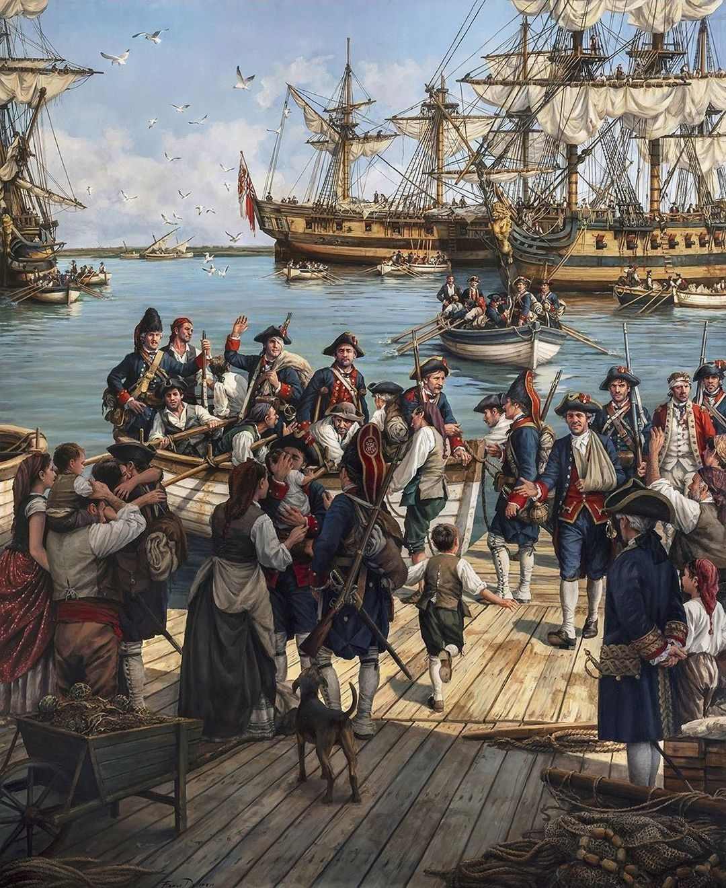

Saiba alguma das curiosidades a respeito do descobrimento do Brasil

Foto: Retorno dos Portugueses
O pagamento de Pedro Álvares Cabral foi de 10 mil cruzados (o equivalente a 35 quilos de ouro). Ele também poderia comprar e vender 30 toneladas de pimenta e 10 caixas de outra especiaria. Um marinheiro comum, por sua vez, ganhava 10 cruzados mensalmente, além de 10 quintais de pimenta.
Era comum que, nessas expedições marítimas da Idade Moderna, prostitutas fossem levadas escondidas nas embarcações.
O escorbuto (doença causada pela falta de vitamina C) era uma das doenças que mais afetavam os marinheiros no período das grandes navegações.
O primeiro nome dado ao Brasil foi Ilha de Vera Cruz, e depois passou a chamar-se Terra de Santa Cruz.
Ainda não se sabe o que houve com a nau de Vasco Ataíde (uma das 13 naus da expedição de Cabral), mas acredita-se que tenha naufragado durante uma tempestade.
Outro nome pelo qual o Brasil foi chamado, à época, foi Terra dos Papagaios, em decorrência da quantidade de papagaios que havia aqui.
Pero Vaz de Caminha, quando relatou o achamento do Brasil para o rei português, acreditou que as novas terras eram, na verdade, uma ilha.
A ilha de Fernando de Noronha tem esse nome em referência a Fernão de Loronha, fidalgo português que recebeu a ilha como capitania do rei de Portugal, em 1504.
Estima-se que, quando da chegada dos portugueses, aproximadamente, sete milhões de indígenas viviam no território brasileiro.
Quando a expedição de Cabral partiu do Brasil, em 2 de maio de 1500, dois grumetes desertores e dois degredados foram deixados no território com os nativos.
Antes de chamar-se Pedro Álvares Cabral, o nome do líder da expedição portuguesa era Pedro Álvares Gouveia. A troca de nome deu-se com o abandono do sobrenome de sua mãe, d. Isabel Gouveia, e a adesão do sobrenome de seu pai, Fernão Cabral."chegada dos portugueses, aproximadamente, sete milhões de indígenas viviam no território brasileiro.